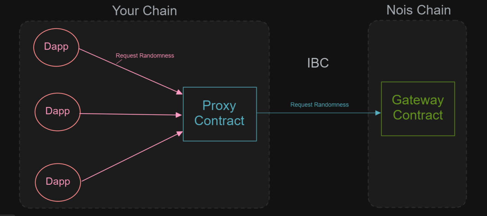
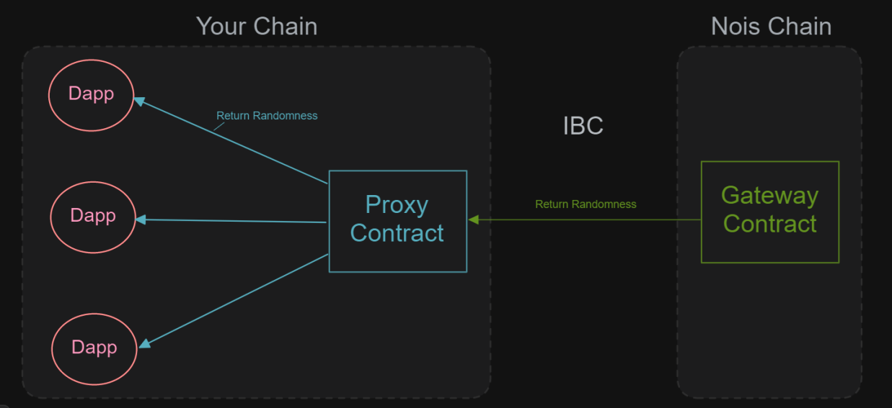
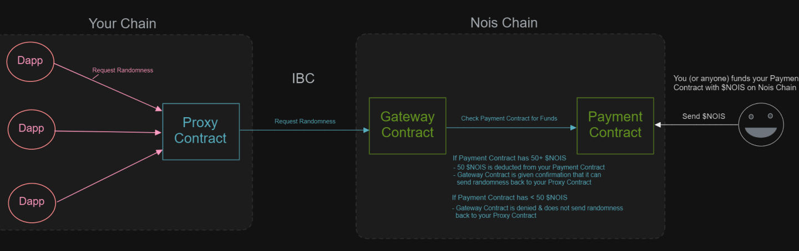
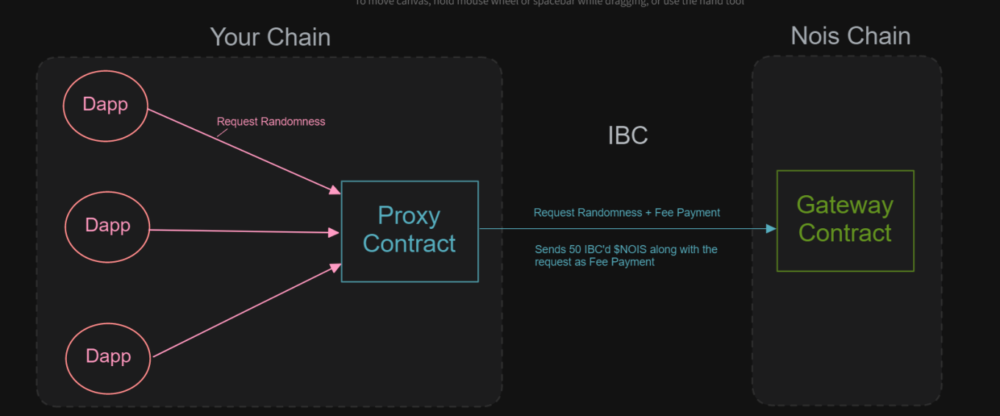

Add Randomness to your Chain
In order to be able to integrate Nois within your blockchain you need to deploy a nois-proxy which plays the role of an outpost contract. Good news, Nois can be integrated with any IBC enabled chain and the process is fully permissionless. The nois-proxy's role when deployed to your chain is to abstract the IBC complexity out of the randomness consumer DAPP.
Steps to integrate Nois to your chain
Decide on a nois-proxy strategy
The nois-proxy that you will deploy belongs to you and not to the Nois chain. Your nois-proxy will have a nois-payment contract at the Nois chain so it can pay for randomness. You need to decide how much dapps need to pay your proxy in prder for the proxy to forward the request to Nois. You can set this price in IBCed NOIS or you can even set the native token of your chain, or even Bitcoin. You cannot set the price of the proxy for free but you can set it extremely low like 1ujuno. If you still want to offer it for free you can fork the proxy code and make it free. Just remember that if you set the price too low some people/dapps can request the randomness from your proxy for a cheap price and end up consuming you $NOIS tokens at the other side (from you nois-payment contract on Nois chain) You are the manager of your proxy so you can at any point in time withdraw part or all the funds that your proxy has accumulated. You can make your proxy part of governance and withdraw the funds to the community pool if you wish. Proxies that use Nois frequently will get in version 0.14.0 discounts. This is not deployed yet but when it will. proxy operators can make money out of the proxying business. This article can help you better understand how the traffic between nois and a consumer chain work

Connect your chain to Nois
By the end of this step you should have an IBC transfer channel between your Chain and Nois, so that you can pay for randomness with NOIS.
- Configure your relayer software (hermes, go-relayer, ts-relayer) to have Nois and your chain (Check the chain-registry for the details)
- Create a Client, a connection, and a transfer channel between both chains.
- Check that the channel has been created. You can do so in this IBC mainnet dashboard or testnet dashboard
- Start the relayer and IBC transfer 1 NOIS from Nois chain to your chain and check the balance (on destination account) in order to get the IBCed NOIS denom. write down the IBC denom as you will need this for a later step.
Install the binary of your chain
For this step you can check the docs for your IBC chain. and atthe end of this step you should be able to run the chain binary. Example:
junod version
Navigate to the Nois contract releases link
navigate to this link and you should find a list of releases. scroll to the latest version and expand the list of artifacts/assets then click and download nois_proxy.wasm
Store the nois-proxy contract code
junod tx wasm store \
nois_proxy.wasm* \
--from <your-key> \
--chain-id uni-6 \
--gas=auto \
--gas-adjustment 1.4 \
--gas-prices 0.025ujunox \
--broadcast-mode=block \
--node=https://rpc.uni.juno.deuslabs.fi:443 -y
instantiate the nois-proxy contract on your chain
The Proxy contract is what will send requests for randomness to Nois Chain via IBC. It will be the central source of randomness that dapps on your chain can send requests to.
 
instantiation paramaters description:
| Parameter | Description | Type |
|---|---|---|
| manager | You can put your address here. It will allow you to set the proxy config parameters and withdraw any funds held/made by the proxy | String |
| prices | This field will determine how much Dapps need to pay your Proxy Contract when they request randomness. You can set this to whatever denom and amount you like. For example, if you're using a Payment Mode of mode::IbcPay, you might want to do something like this: |
Set Prices to 55 NOIS vec![coin("unois", 55_000_000u32)] For each request a Dapp
sends to your Proxy Contract, your Proxy Contract sends 50 NOIS to the gateway
for Nois fees, and you profit 5 NOIS for your service!.
Setting this to an
empty list will not make the proxy price free but will stop the contract from
accepting incoming beacon requests. It can be a way to stop the proxy from
serving randomness
Please note that these are not the funds that will be
sent over to Nois but only the proxy for the fee. | Vec<Coin> | | test_mode |
Just set this to false. This is only set to true for integration testing |
Boolean | | callback_gas_limit | The amount of gas that the callback to the dapp
can consume.
500000 is a good value if you are not sure. | number | | mode |
This defines the operational mode of the proxy:
two modes are available:
- Funded: In this mode you will need to manually make sure that the
Nois Payment contract (on Nois Chain) always has enough NOIS tokens to process
requests. (Each request costs 50 NOIS). You can think of your Payment Contract
as your "Balance Sheet" or like a "Prepaid Nois Gift Card".
- IbcPay: In
this mode the proxy contract sends IBCed NOIS to the gateway for each beacon
request. You need to whether prefill this contract with NOIS or make sure you
set the Nois fee on the prices field so that DAPPs will send the fee upon
request. | Enum |
Nois-proxy modes explained
- Funded 
- IbcPay 
junod tx wasm instantiate <CODE_ID>
'{"manager":YOUR_ADDRESS_HERE,
"prices":
[
{"denom":"ujunox","amount":"1000000"},
{"denom":"ibc/..ibc_NOIS_you_noted_in_a_previous_step","amount":"50000000"}
],
"callback_gas_limit":500000,
"test_mode":false,
"mode":{"ibc_pay":{
"unois_denom":{
"ics20_channel":"channel-xx",
"denom":"ibc/..ibc_NOIS_you_noted_in_a_previous_step"
}
}}}'
--label=nois-proxy
--from <your-key>
--chain-id uni-6
--gas=auto
--gas-adjustment 1.4
--gas-prices 0.025ujunox
--broadcast-mode=block
--node=https://rpc.uni.juno.deuslabs.fi:443 -y
Setup the IBC channel for the wasm relay - Transferring the randomness beacon not the tokens
- choose your relayer software (ts-relayer or hermes or go-relayer).
- You can create a new IBC client and connection or skip if you want to use the existing connection (the one that has been created for the token transfer).
- Create an IBC channel where the source is the nois-proxy you have just
instantiated on your chain and the destination is the nois-gateway on the Nois
chain (the direction is important). When creating the channel Make sure to use
the wasm port.
ℹ️ If the nois-gateway address is nois1x55xhexprdwfl6nfju53hfxj77nsxlj5c9jzyvjuastl9f3dt6jsx6l9yg then the port will be wasm.nois1x55xhexprdwfl6nfju53hfxj77nsxlj5c9jzyvjuastl9f3dt6jsx6l9yg
- Upon channel connection/creation the nois-gateway factory creates a payment contract for your proxy on the Nois chain. This payment contract will be your balance sheet. So long as the payment contract has enough balance your proxy will be able to request randomness beacon. So make sure the payment contract does not run out of $NOIS.
- Check that the channel has been created. You can do so in this IBC mainnet dashboard or testnet dashboard
- Run the relayer and ask others to run their relayers aswell.
- If the proxy mode is on IbcPay make sure to fill the proxy with IBCed NOIS tokens. (every beacon request will consume $50 NOIS). else if the proxy is on Funded mode then make sure the payment contract is filled with NOIS tokens.
- For performance reasons when using IbcPay mode, it is a good idea to have some initial 50 $NOIS on the payment, this allows to gateway to process the beacon even when the ibc token transfer is slower than the beacon request wasm packet.
- If you need some NOIS tokens for your payment contract you can contact us on discord and describe your usecase so that we give you a NOIS grant
- Congrats 🎉 you can use the proxy on your Dapp to get randomness. You can follow use_nois_randomness page for more details.